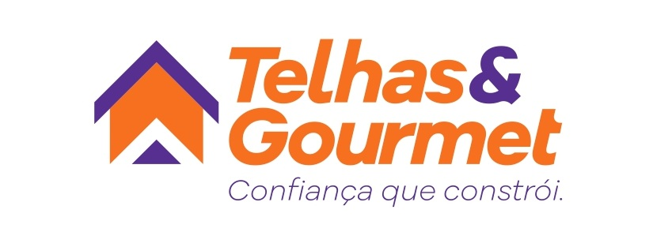
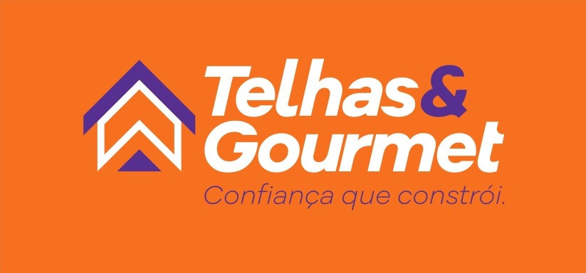

Muito mais que produtos. Entregamos mão de obra qualificada, durabilidade e sofisticação para sua obra em Uberlândia e região. Especialistas em telhas, troca de telhado, churrasqueiras e fornos.

Anos de
Tradição
Nascemos da necessidade de oferecer a Uberlândia e região um serviço realmente especializado. Identificamos que muitos clientes buscavam não apenas comprar produtos, mas exigiam qualidade, confiança e mão de obra qualificada em um só lugar — e foi assim que começamos nossa trajetória.
Nosso grande diferencial é o cuidado com cada etapa do processo. Prezamos pela qualidade dos produtos, pela responsabilidade com cada cliente e pelo cumprimento rigoroso dos prazos, garantindo segurança e tranquilidade do início ao fim do serviço.
Mais do que vender, nosso objetivo é entregar durabilidade e satisfação em cada trabalho realizado.
Estética, conforto térmico e proteção. Trabalhamos com venda e instalação especializada.
Modelos tradicionais em barro vermelho ou branco. Excelência em conforto térmico e beleza clássica para seu projeto.
Cotar TelhasMáximo isolamento térmico e acústico com as telhas sanduíche, ou extrema praticidade e leveza com a linha em PVC.
Cotar TelhasTelhas de cimento e cerâmica esmaltada/porcelanato para projetos arquitetônicos de alto padrão e máxima durabilidade.
Cotar TelhasTransforme seus finais de semana com nossos modelos construídos artesanalmente e sob medida.
Modelos robustos em alvenaria tradicional, churrasqueiras rebocadas e o clássico e charmoso acabamento em tijolinho à vista.
Solicitar ProjetoO tradicional Forno Iglu para pizzas e assados perfeitos, e Fogões a lenha sob medida para resgatar o melhor da culinária mineira.
Solicitar ProjetoA solução completa para sua área: Kit Duo (Forno e Fogão) ou o imponente Kit Trio (Churrasqueira, Forno e Fogão integrados).
Solicitar ProjetoLogística ágil e equipe de instalação preparada para atender as seguintes cidades: